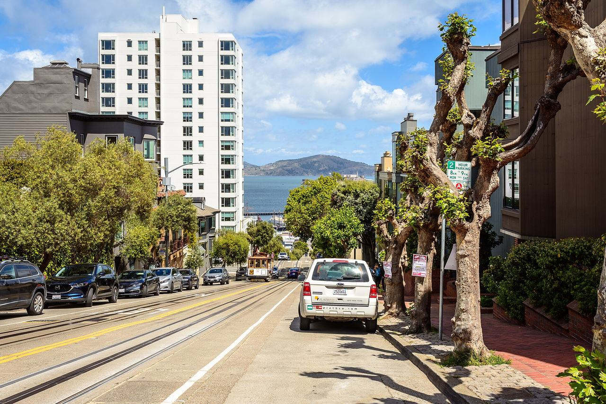

Russian Hill
A steep district above North Beach and the waterfront, known for its cable-car grades and dense mix of flats and single houses.

Map
Named buildings and landmarks
-

-
-
-

-
-

-
-
-
-
-
-

Also here: Bellaire Tower, Shandygaff Health Food Restaurant, North Point Townhouses, Honig Cooper Co. Office Building, South End Rowing Club and Dolphin Swimming & Boating Club.
Streets documented so far
- Aladdin Terrace
1 building, built 1939. - Bay Street
2 buildings, built 1906–1950. - Beach Street
1 building; 1 in the Aquatic Park Historic District. - Bernard Street
1 building, built 1907. - Broadway
3 buildings, built 1912. - Chestnut Street
1 building, built 1926. - Columbus Avenue
1 building, built 1931. - Filbert Street
1 building, built 1909. - Francisco Street
A 1914 corner house beside the Powell–Hyde cable car line; tied to Nicolas Cage. - Green Street
1 building, built 1950. - Greenwich Street
1 building, built 1912. - Hyde Street
1 building, built 1908. - Jackson Street
1 building, built 1914. - Jefferson Street
1 building. - Jones Street
1 building, built 1908; 1 in the Russian Hill-Macondray Lane Historic District. - Larkin Street
2 buildings, built 1907–1914. - Leavenworth Street
1 building, built 1907. - Lombard Street
2 buildings, built 1909–2018; 1 in the Lombard Street Historic District. - Lurmont Terrace
1 building, built 1957. - Macondray Lane
1 building, built 1900; 1 in the Russian Hill-Macondray Lane Historic District. - Mason Street
2 buildings, built 1908–1911. - Mccormick Street
1 building, built 1907. - Montclair Terrace
1 building, built 1938. - North Point Street
1 building, built 1978. - Pacific Avenue
5 buildings, built 1914–2014. - Polk Street
1 building, built 1924. - Russell Street
2 buildings, built 1906–1907; 2 in the Russell Street Historic District. - Taylor Street
Three flats of 1907 recorded as where Joe DiMaggio grew up. - Union Street
9 buildings, built 1906–1912. - Vallejo Street
2 buildings, built 1911–2004. - Valparaiso Street
1 building, built 1912. - Van Ness Avenue
9 buildings, built 1909–1922. - Washington Street
1 building, built 1922.
Parks and public spaces
- Alice Marble Courts
Neighborhood park or playground, 36,590 sq ft. - Broadway Tunnel W. Mini Park
Mini park, 5,227 sq ft. - Fay Park
Mini park, 14,375 sq ft. - Francisco Park
Neighborhood park or playground, 4.9 acres. - Helen Wills Playground
Neighborhood park or playground, 40,075 sq ft. - Hyde & Vallejo Mini Park
Mini park, 4,792 sq ft. - Joseph Conrad Square
Mini park, 6,534 sq ft. - Michelangelo Playground
Neighborhood park or playground, 20,909 sq ft. - Rowing Club - Dolphin Club
Concession, 1.1 acres.
Historic districts here
Adjacent neighborhoods
North Beach is east down the Vallejo Street grade and Chinatown south-east beyond Broadway. Nob Hill adjoins south, the Marina north-west along the waterfront, and Pacific Heights west across Van Ness Avenue.